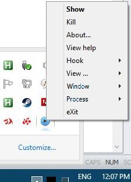

Once you move DxWnd in the system tray with File > Move to tray and until the program is terminated, an icon will be visible in the system tray. Right-clicking on the icon, you get a subset of the DxWnd commands, plus the Show command that shows the DxWnd window again. The Show command is the menu default, so you can also activate it by double-clicking on the DxWnd tray icon.

|
- READY state |
DxWnd is ready to hook a program |
|
- IDLE state |
DxWnd is running, but will not affect any program |
|
- RUNNING state |
DxWnd is currently operating on a program |